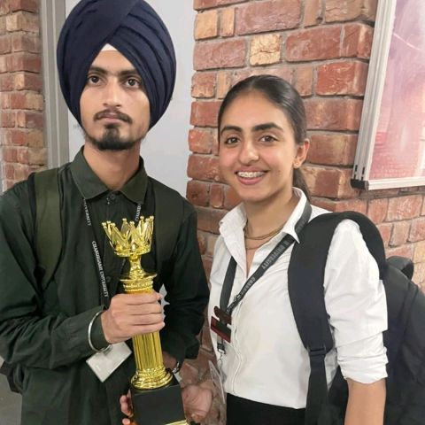
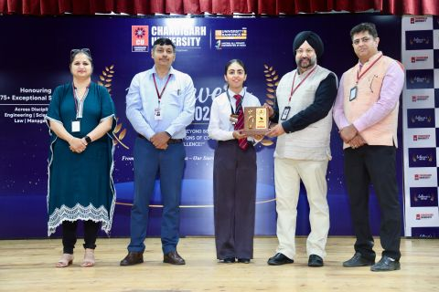
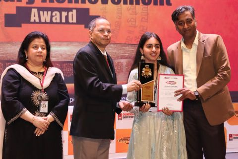
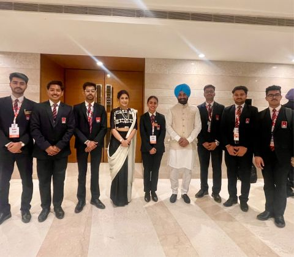

Exemplary Achiever
Chandigarh University · 2026Recognised in April 2026 for continued growth and achievement.
CSE (AIML) undergraduate at
Chandigarh University
Data Science Engineer | Chandigarh University
About
01 — About me



I’m Bhumi Kapoor — a technology enthusiast, researcher, builder, problem-solver, communicator, and now, a founder.
Let’s build something ↗Beyond the job title
I’ve been working since my 10th standard. My biggest strength has never been one particular skill — it’s adapting, learning quickly, understanding the problem, and figuring out how to get the work done.
From AI research and machine learning to automation, websites, business analysis and client management, I’ve worked across very different spaces. Today, I’m bringing those experiences together as the founder of a technology venture, building practical digital solutions for businesses.
I enjoy the thinking that happens before a solution is built: listening to what a client actually needs, breaking a problem down, finding the right approach, and turning an idea into something useful.
Alongside my venture, I’m working on AI and automation through a professional internship. I’ve mentored students, led technical projects, worked in international customer-facing environments, and learned how much good communication matters.
I’m curious by nature. I love learning and taking responsibility, even outside my comfort zone. Give me something worth solving, and I’ll learn what I need to learn to solve it.
02 — Experience
Technology taught me to build. Research taught me to question. Client-facing work taught me to listen and deliver.
Bringing together a team to build websites, AI chatbots, agents and workflow systems. My role connects product thinking, business development, client communication and technical execution.
Entrepreneurship · AI automation · Digital productsExploring intelligent workflows and practical automation: understanding business requirements, experimenting with AI systems and simplifying repetitive processes.
AI · Automation · Business processesLed three Samsung PRISM worklets across Hindi, Urdu and Punjabi. Worked on spoken language identification, physical-access speaker-spoofed parallel databases, data preparation and model evaluation. Coordinated research, teammates and delivery.
Speech AI · NLP · Dataset development · LeadershipGenerated leads, understood client requirements and coordinated project conversations and follow-ups. Built experience translating business needs into practical solutions.
Business development · Client solutionsDelivered training in Python and machine learning, with practical coding exercises, project guidance and problem-solving sessions for students.
Python · Machine learning · MentoringOperational leadership at Teen Show Agency and management work at STUSHE, bringing together coordination, ownership and client-facing execution. Dates reflect the supplied résumé.
Operations · Management · CommunicationWorked across social media, graphic design, digital strategy and customer communication. Additional creative roles include Wizcraft Publication, LVL99, FIAN and HiFlyer.
Design · Content · Social mediaJunior marketing at NIKKI.k, customer support at Picaro, an international brand internship at Sol + Sonder and a healthcare internship at Ivyleague. Each role strengthened my ability to listen, adapt and deliver.
Customer experience · Marketing · International work03 — Selected work
A closer look at the ventures that bring research, people and product thinking together.
04 — The project shelf
Explore a card for the story behind the work. 7 projects
05 — Achievements & awards
Recognition is a reminder to keep learning — and to bring others along.
Drag the photos to rearrange · or focus a photo and use arrow keys
Recognised in April 2026 for continued growth and achievement.
A second consecutive year of recognition across the 2025–2026 journey.
DriveSense — IIT Delhi & Delhi Incubator.
Gujarat government support in the Underwater Submarine category.
An EdTech idea brought to life with Prabhmannat Singh and Arnav Hooda.
Recognised for internships, practical learning, certifications and extracurricular involvement.
Recognition from Chandigarh University leadership.
1st in the Tele-Automobile research paper competition; 3rd at Thapar’s Innovation Hackathon; recognised by SRM for hosting IEEE Final HIZE.
06 — Certifications
07 — Research & case studies
From speech AI to connected systems, a space for deeper thinking.
08 — People & collaboration
The people beside the work matter just as much as the work itself.
Draft testimonials — sample wording for review, not approved endorsements.
Bhumi brings clarity to the messy part of building. She asks the right questions, connects the technical work to the bigger picture, and takes ownership of moving things forward.
how do you keep
so many ideas moving?
Working with Bhumi feels collaborative from the start. She communicates her ideas clearly, listens to feedback, and keeps the team focused on making something genuinely useful.
From understanding the problem to working through the details, Bhumi brings curiosity and care to the process. She makes space for different perspectives and keeps learning as the work evolves.
09 — Let’s work together
Have a challenge worth solving? I’m open to AI, automation, research, product and business opportunities.
Let’s talk ↗
Technology is powerful.Start a conversation
Tell me about the problem, project or opportunity on your mind.